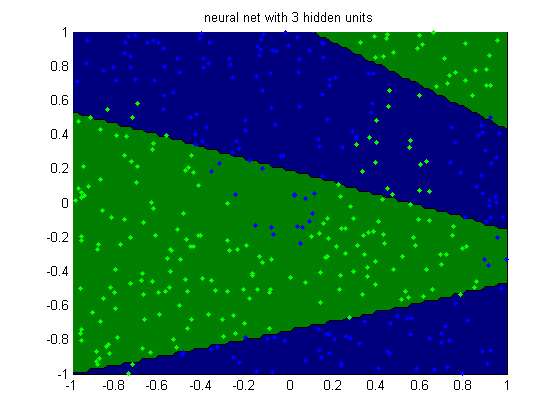
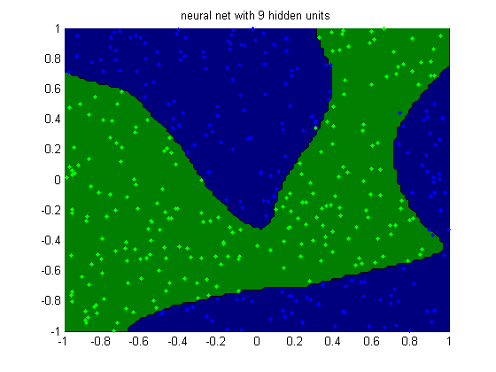

H = [3, 6, 9];
for hi=1:length(H)
nhidden = H(hi);
setSeed(0);
nVars = 2;
nInstances = 400;
options.Display = 'final';
options.MaxIter = 100;
[X,y] = makeData('classificationNonlinear',nInstances,nVars);
[N,D] = size(X);
X1 = [ones(N,1) X];
lambda = 1e-2;
model = mlpClassifFitSchmidt(X, y, nhidden, lambda, options);
[yhat, py] = mlpClassifPredictSchmidt(model, X);
figure;
if length(nhidden)==1
str = sprintf('neural net with %d hidden units', model.nHidden);
else
str = sprintf('neural net with %d,%d hidden units', ...
model.nHidden(1), model.nHidden(2));
end
plotClassifier(X1, y, model.w, str, model.nHidden);
printPmtkFigure(sprintf('mlpClassifH%d', nhidden));
end
Exceeded Maximum Number of Iterations
Exceeded Maximum Number of Iterations
Exceeded Maximum Number of Iterations


